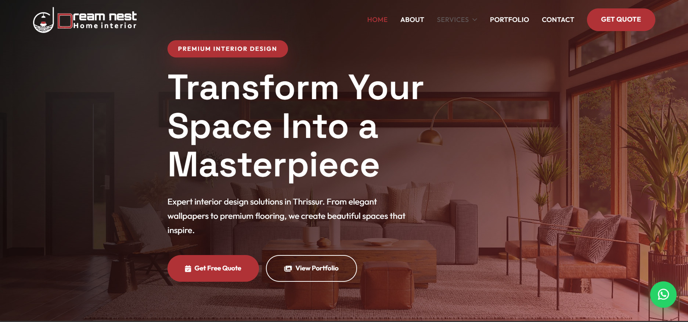
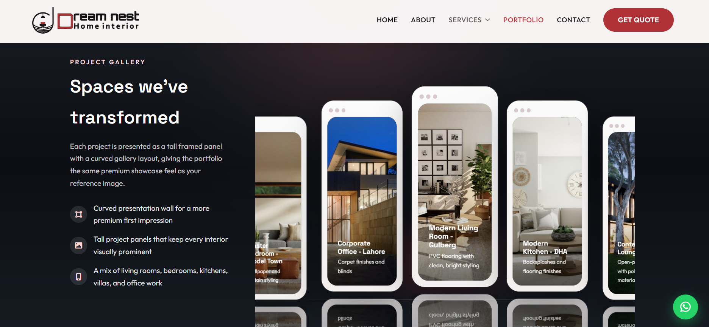
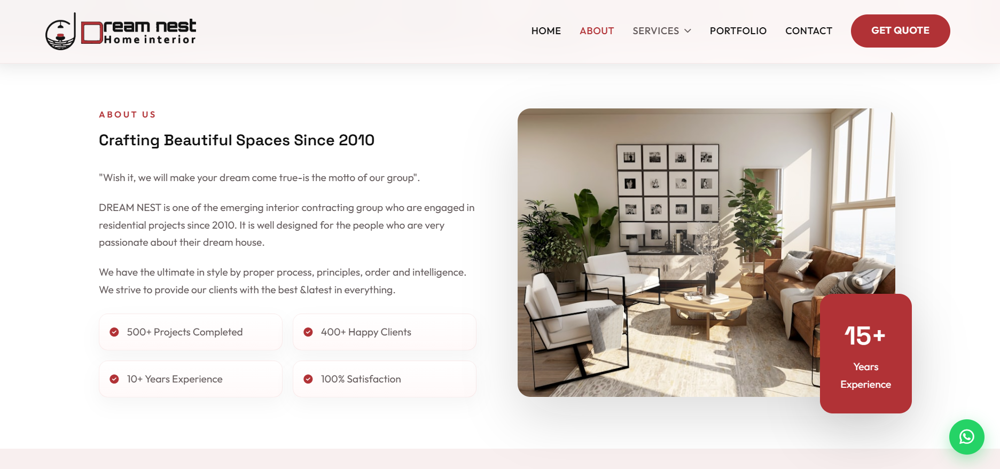

Interior Website
Premium Brand
Case Study
DREAM-NEST Website
A polished home interior website built around a cinematic landing page, a framed project gallery, and a trust-led about experience.
- Uses your real homepage, portfolio, and about page screenshots as the showcase media
- Balances warm interior visuals, clear CTAs, and branded navigation for a premium first impression